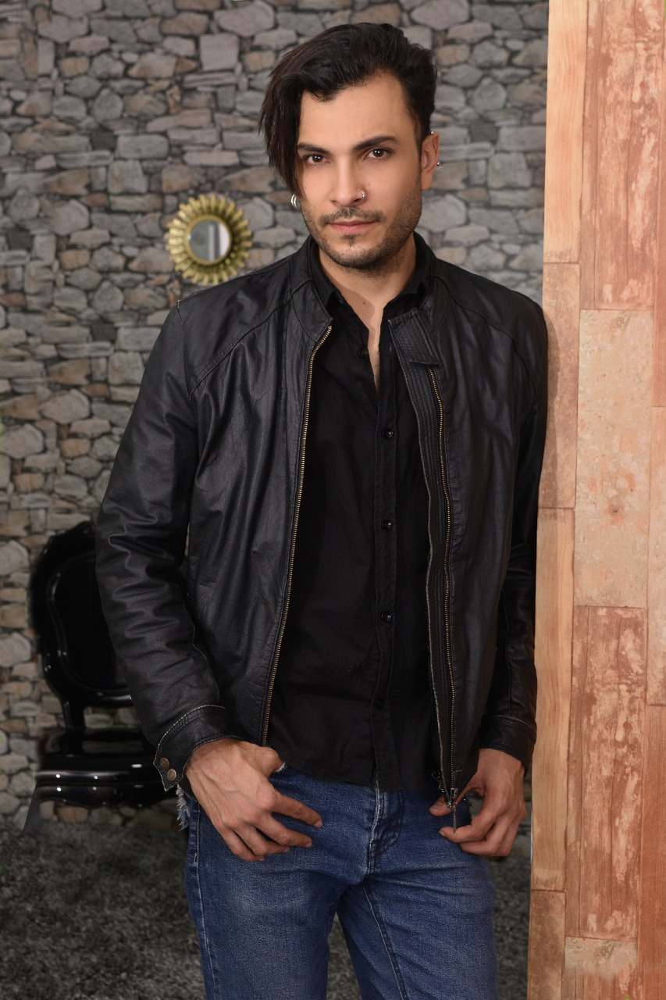

Nací el 12 de agosto de 1986 en Medellín. Graduado de ingeniería en instrumentación y control del politécnico Jaime Isaza Cadavid en el año 2009. Docente de Matemáticas y Física para la secretaria de educación de Antioquia y posteriormente Bello desde el año 2010.
Sexto semestre de Historia en la universidad de Antioquia.
Director del club literario Kirón desde el año 2013.
He publicado cinco libros:
- Los cantos de la espada con la editorial hombre nuevo en el año 2012.
-En el 2014 el libro Entre la piel con la editorial pulso & letra.
- En la fiesta del libro y la cultura 2017 la obra titulada Ruta sur y otros cuentos.
- Gané el concurso de literatura del 2016 en el Politécnico Jaime Isaza Cadavid y publiqué el libro Arenas del Errante.
- En el 2018 el libro Asesino de las Dagas con la editorial Pulso & letra editores.
Ahora adelanto varios proyectos en el campo del relato y la novela...